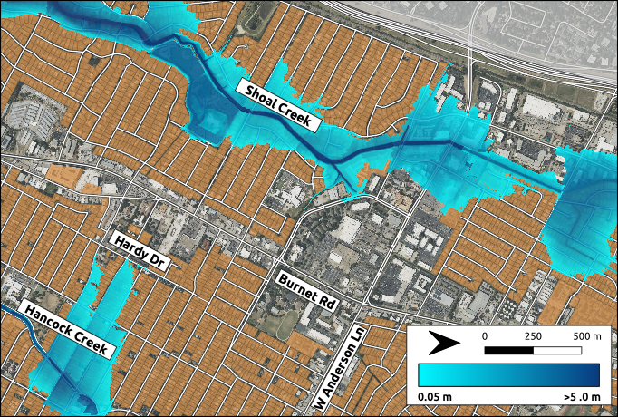
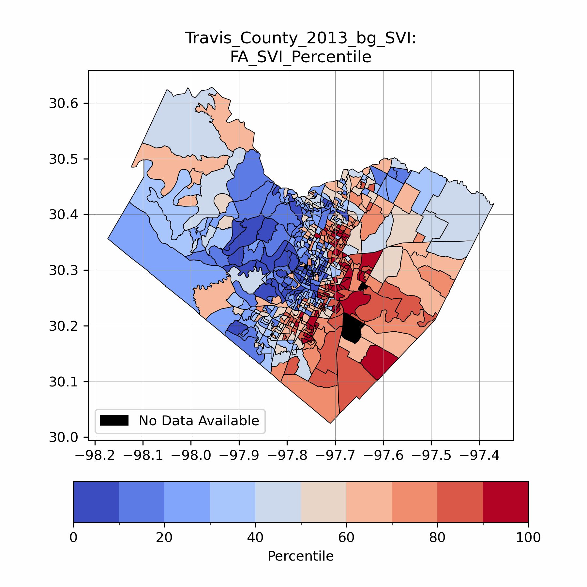
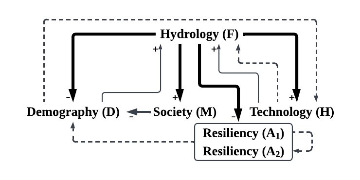

Socio-Hydrology
Studying of the interconnected relationships between people and water using a simplified conceptual model of society and the environment
Studying of the interconnected relationships between people and water using a simplified conceptual model of society and the environment
Utilizing a high-resolution satellite remote sensing methodology to increase the detection of flooding and heat events
Examining how fluvial and pluvial flooding impact vulnerable populations with a topographic based inundation methodology
Quantifying resiliency metrics for household level disruptions to critical resources during and immediately after flooding events
I am committed to building Findable, Accessible, Interoperable, and Reusable (FAIR) tools for the socio-hydrology and hazard modeling fields. The below packages are a collection of the tools we have developed. We actively welcome your feedback and ideas for future collaborations. To learn more, please go to the projects' individual GitHub pages.

Mapping compounding fluvial, pluvial, and coastal flooding

Index for estimating socio-demographic based vulnerability

Socio-hydrology dynamical systems modeling package